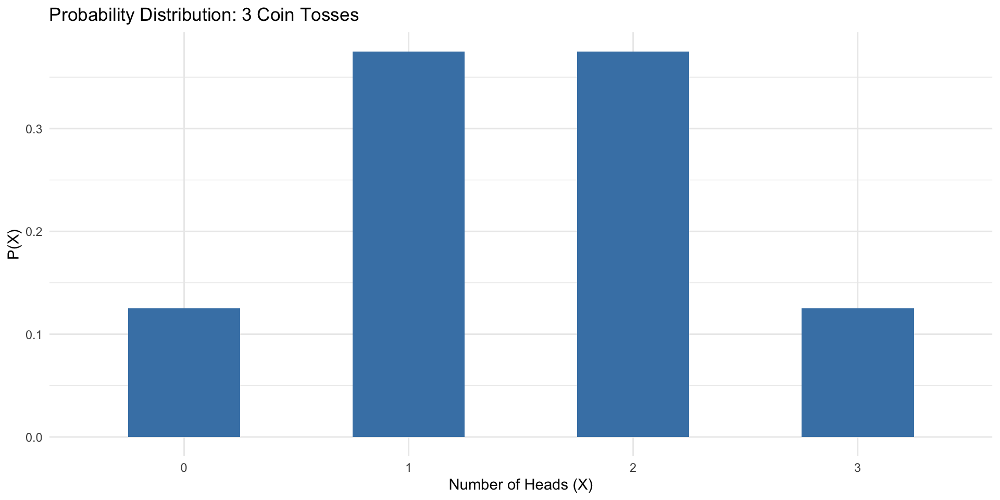
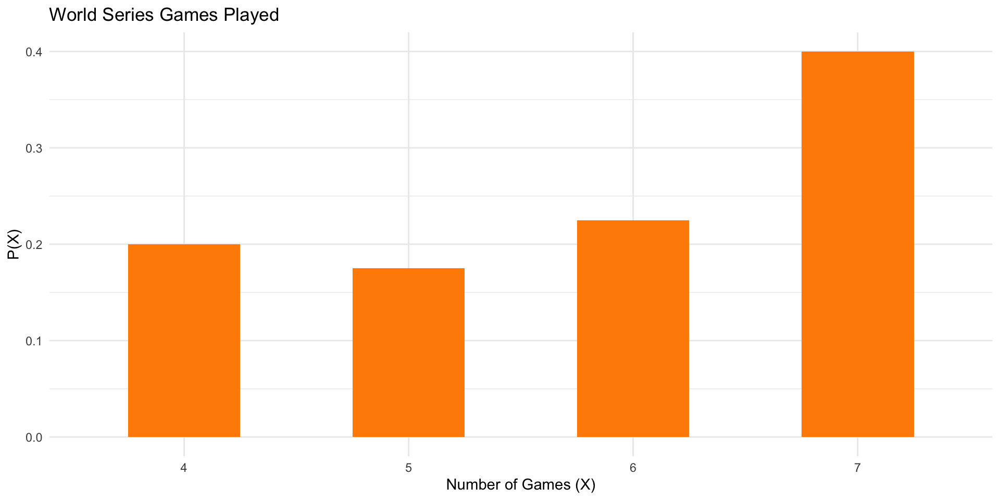
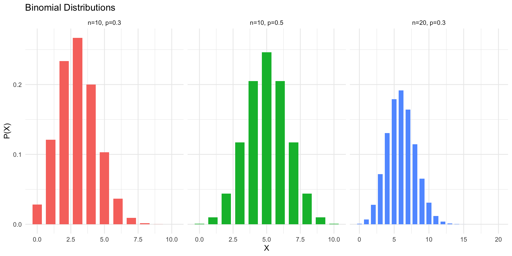

Statistics
Chapter 5: Discrete Probability Distributions
Shih Chien University
2026-06-05
Overview
Sections covered:
- 5-1 Probability Distributions
- 5-2 Mean, Variance, Standard Deviation, and Expectation
- 5-3 The Binomial Distribution
- 5-4 Other Types of Distributions (Optional)
Learning objectives:
- Construct and interpret discrete probability distributions
- Compute the mean, variance, and expected value of a discrete variable
- Apply the binomial probability formula and identify binomial experiments
- Use the multinomial, Poisson, and hypergeometric distributions
Section 5-1: Probability Distributions
Random Variables
Key Definitions
A random variable is a variable whose value is determined by the outcome of a probability experiment.
A discrete random variable has a finite or countable number of possible values.
A continuous random variable can take on any value in an interval on the number line.
Examples of discrete random variables:
- Number of heads in 3 coin tosses: 0, 1, 2, 3
- Number of children in a family: 0, 1, 2, 3, …
- Number of defects in a batch of products
Examples of continuous random variables:
- Height, weight, temperature, time
Discrete Probability Distributions
Definition
A discrete probability distribution consists of all possible values a discrete random variable can take on, along with their corresponding probabilities.
Two requirements for a valid probability distribution:
- The sum of all probabilities must equal 1: \sum P(X) = 1
- Each probability must be between 0 and 1: 0 \leq P(X) \leq 1
Probability distributions can be presented as tables, formulas, or graphs.
Example 5-1
Rolling a Die
Construct a probability distribution for the outcomes of rolling a single fair die.
Example 5-1
Solution
R implementation
| X | P(X) |
|---|---|
| 1 | 0.1667 |
| 2 | 0.1667 |
| 3 | 0.1667 |
| 4 | 0.1667 |
| 5 | 0.1667 |
| 6 | 0.1667 |
Each outcome has an equal probability of \frac{1}{6} \approx 0.167. Note that \sum P(X) = 1.
Example 5-2
Tossing Three Coins
Represent the probability distribution for the number of heads when 3 fair coins are tossed, and draw a graph.
Example 5-2

Example 5-3
Baseball World Series
The following data show the number of games played in 40 World Series. Construct a probability distribution and draw a graph.
| Games played | 4 | 5 | 6 | 7 |
|---|---|---|---|---|
| Frequency | 8 | 7 | 9 | 16 |

Example 5-4
Checking Valid Distributions
Determine whether each of the following is a valid probability distribution.
Example 5-4
Solution
R implementation
(a) Sum = 1 | All in [0,1]: TRUE → VALID (b) Sum = 0.9167 → INVALID (c) Sum = 1 → VALID (d) Has negative P: TRUE → INVALIDImportant
A distribution is valid only when both conditions hold: \sum P(X) = 1 and 0 \leq P(X) \leq 1 for every value.
Section 5-2: Mean, Variance, Standard Deviation, and Expectation
Formulas for Mean, Variance, and Standard Deviation
Formulas
Mean (Expected Value): \mu = E(X) = \sum X \cdot P(X)
Variance: \sigma^2 = \sum \left[X^2 \cdot P(X)\right] - \mu^2
Standard Deviation: \sigma = \sqrt{\sigma^2}
The mean describes the long-run average outcome of the experiment. The variance and standard deviation measure the spread of the distribution around the mean.
Example 5-5
Rolling a Die
Find the mean of the number of spots that appear when a fair die is rolled.
Example 5-5
Solution
Solve
In a family of two children, find the mean number of girls.
On average, a two-child family will have 1 girl.
Example 5-7
Warning
If 3 coins are tossed, find the mean of the number of heads.
When 3 coins are tossed many times, the average number of heads is 1.5.
Example 5-8
Warning
The probability distribution below shows the number of trips of five or more nights that American adults take per year. Find the mean.
| X | 0 | 1 | 2 | 3 | 4 |
|---|---|---|---|---|---|
| P(X) | 0.08 | 0.60 | 0.25 | 0.04 | 0.03 |
| X | P(X) | X·P(X) |
|---|---|---|
| 0 | 0.08 | 0.00 |
| 1 | 0.60 | 0.60 |
| 2 | 0.25 | 0.50 |
| 3 | 0.04 | 0.12 |
| 4 | 0.03 | 0.12 |
Mean μ = 1.34 trips per yearAmerican adults take an average of approximately 1.34 overnight trips of 5+ nights per year.
Example 5-9
Warning
Find the variance and standard deviation for the probability distribution of rolling a fair die (Example 5-5).
| X | P(X) | X²·P(X) |
|---|---|---|
| 1 | 0.1666667 | 0.1666667 |
| 2 | 0.1666667 | 0.6666667 |
| 3 | 0.1666667 | 1.5000000 |
| 4 | 0.1666667 | 2.6666667 |
| 5 | 0.1666667 | 4.1666667 |
| 6 | 0.1666667 | 6.0000000 |
μ = 3.5
σ² = Σ[X²·P(X)] - μ² = 15.1667 - 12.25 = 2.9167
σ = 1.71Example 5-10
Warning
A bag contains 5 balls numbered 3, 3, 4, 5, and 5. A ball is selected at random. Find the mean, variance, and standard deviation.
| X | P(X) | X·P(X) | X²·P(X) |
|---|---|---|---|
| 3 | 0.4 | 1.2 | 3.6 |
| 4 | 0.2 | 0.8 | 3.2 |
| 5 | 0.4 | 2.0 | 10.0 |
μ = 4 | σ² = 0.8 | σ = 0.8944Example 5-11
Warning
The probability distribution below shows the number of callers on hold for a radio talk show. Find the mean, variance, and standard deviation.
| X | 0 | 1 | 2 | 3 | 4 |
|---|---|---|---|---|---|
| P(X) | 0.1 | 0.3 | 0.3 | 0.2 | 0.1 |
| X | P(X) | X·P(X) | X²·P(X) |
|---|---|---|---|
| 0 | 0.1 | 0.0 | 0.0 |
| 1 | 0.3 | 0.3 | 0.3 |
| 2 | 0.3 | 0.6 | 1.2 |
| 3 | 0.2 | 0.6 | 1.8 |
| 4 | 0.1 | 0.4 | 1.6 |
μ = 1.9 | σ² = 1.29 | σ = 1.1358Expected Value
Expected Value
The expected value E(X) of a discrete random variable equals its mean: E(X) = \mu = \sum X \cdot P(X)
Expected value is used to evaluate the long-run average gain or loss in games of chance, investments, and insurance.
Caution
If E(X) < 0, the player or investor expects a net loss in the long run.
Example 5-12
Winning Lottery Tickets
A lottery offers one $1000 prize, two $500 prizes, and five $100 prizes. One thousand tickets are sold at $1 each. Find the expected value of a ticket.
| Net Gain X | P(X) | X·P(X) |
|---|---|---|
| 999 | 0.001 | 0.999 |
| 499 | 0.002 | 0.998 |
| 99 | 0.005 | 0.495 |
| -1 | 0.992 | -0.992 |
E(X) = $ 1.5The expected value is negative, meaning a player can expect to lose about $0.35 per ticket on average.
Example 5-13
Special Die
A special die has faces labeled 1, 4, 4, 6, 6, 6. Find the expected value when rolling it.
Example 5-13
Solution
Solve
An investor is considering two bonds. Bond X: 70% chance of earning $120, 30% chance of losing $40. Bond Y: 60% chance of earning $90, 40% chance of losing $30. Which bond has the better expected return?
E(Bond X) = $ 72 E(Bond Y) = $ 42 Better investment: Bond XBond X has the higher expected return ($72 vs $42).
Section 5-3: The Binomial Distribution
Binomial Experiments
Definition
A binomial experiment satisfies all four of the following conditions:
- There is a fixed number of trials n.
- Each trial has only two possible outcomes: success or failure.
- The outcomes of each trial are independent of one another.
- The probability of success p remains the same for every trial.
Examples: Tossing a coin n times; surveying n people with a yes/no question; testing n components with replacement.
Notation for the Binomial Distribution
Notation
| Symbol | Meaning |
|---|---|
| P(S) | Probability of success |
| P(F) | Probability of failure |
| p | Numerical probability of success |
| q = 1 - p | Numerical probability of failure |
| n | Number of trials |
| X | Number of successes in n trials |
Note: 0 \leq X \leq n and X = 0, 1, 2, \ldots, n
Binomial Probability Formula
Formula
In a binomial experiment, the probability of exactly X successes in n trials is:
P(X) = \frac{n!}{(n-X)!\,X!} \cdot p^X \cdot q^{n-X}
where q = 1 - p.
- \dfrac{n!}{(n-X)!\,X!} = {}_nC_X counts the number of ways to arrange X successes among n trials
- p^X is the probability of X successes
- q^{n-X} is the probability of n - X failures
Example 5-15: Tossing Coins
Warning
A coin is tossed 3 times. Find the probability of getting exactly 2 heads.
n = 3 , X = 2 , p = 0.5 , q = 0.5 P(2 heads) = C(3,2) × (0.5)² × (0.5)¹ = 3 × 0.25 × 0.5 = 0.375
Verification via dbinom: 0.375Important
The coin-toss problem meets all 4 binomial conditions: fixed n=3 trials, two outcomes (H/T), independent tosses, constant p=0.5.
Example 5-16
Warning
A survey found that 1 out of 5 Americans has visited a doctor in any given month. If 10 people are selected at random, find the probability that exactly 3 visited a doctor last month.
n = 10 , X = 3 , p = 0.2 , q = 0.8 P(3) = C(10,3) × (1/5)³ × (4/5)⁷ = 0.201
dbinom check: 0.201Example 5-17
Warning
A survey found that 30% of teenage consumers receive spending money from part-time jobs. If 5 teenagers are selected at random, find the probability that at least 3 have part-time jobs.
P(3) = 0.132 P(4) = 0.028 P(5) = 0.002 P(at least 3) = P(3)+P(4)+P(5) = 0.163
Verification: 1 - P(X ≤ 2) = 0.163Example 5-18
Using the Binomial Table
Solve Example 5-15 (3 coins, P(exactly 2 heads)) using the binomial probability table (Table B) or R.
Example 5-18
Example 5-19
Fear of Being Home Alone at Night
A survey reported that 5% of Americans are afraid of being alone at night. If 20 Americans are randomly selected, find the probability that:
Exactly 5 are afraid
At most 3 are afraid
At least 3 are afraid
(a) P(X = 5) = 0.0022 (b) P(X ≤ 3) = P(0)+P(1)+P(2)+P(3) = 0.9841 (c) P(X ≥ 3) = 1 - P(X ≤ 2) = 0.0755Example 5-20
Driving While Intoxicated
Reports indicate that 70% of single-vehicle traffic fatalities at night on weekends involve an intoxicated driver. If 15 such fatalities are selected, find the probability that exactly 12 involve an intoxicated driver.
Example 5-20
Solution
Solve
\mu = n \cdot p
\sigma^2 = n \cdot p \cdot q
\sigma = \sqrt{n \cdot p \cdot q}
These are algebraically equivalent to the general formulas \mu = \sum X \cdot P(X) and \sigma^2 = \sum[X^2 \cdot P(X)] - \mu^2.
Example 5-21
Warning
A coin is tossed 4 times. Find the mean, variance, and standard deviation of the number of heads.
μ = n·p = 4 × 0.5 = 2 σ² = n·p·q = 4 × 0.5 × 0.5 = 1 σ = √σ² = √ 1 = 1
Verification: μ = 2 | σ² = 1Example 5-22
Rolling a Die 480 Times
A die is rolled 480 times. Find the mean, variance, and standard deviation for the number of 3s rolled.
Example 5-22
Solution
Solve
Approximately 2% of all American births result in twins. If a random sample of 8000 births is taken, find the mean, variance, and standard deviation of the number of twin births.
μ = n·p = 160 birthsσ² = n·p·q = 156.8 σ = √σ² = 12.5Important
In a sample of 8000 births, we expect on average 160 twin births, with \sigma \approx 12.5.
Binomial Distribution: Visualization
# Plot binomial distributions for different p values
params <- list(
list(n=10, p=0.3, label="n=10, p=0.3"),
list(n=10, p=0.5, label="n=10, p=0.5"),
list(n=20, p=0.3, label="n=20, p=0.3")
)
df_all <- do.call(rbind, lapply(params, function(par) {
x <- 0:par$n
data.frame(X = x, PX = dbinom(x, par$n, par$p), Label = par$label)
}))
Section 5-4: Other Types of Distributions (Optional)
Overview of Other Discrete Distributions
When the binomial model does not apply, other discrete distributions are available:
| Distribution | When to Use |
|---|---|
| Multinomial | More than two outcomes per trial |
| Poisson | Events over time/area/volume; large n, small p |
| Hypergeometric | Sampling without replacement |
The Multinomial Distribution
Formula
If an experiment has k possible outcomes E_1, E_2, \ldots, E_k with probabilities p_1, p_2, \ldots, p_k, and X_i is the number of times outcome E_i occurs in n independent trials, then:
P(X) = \frac{n!}{X_1!\, X_2!\, X_3!\, \cdots\, X_k!} \cdot p_1^{X_1} \cdot p_2^{X_2} \cdots p_k^{X_k}
where X_1 + X_2 + \cdots + X_k = n and p_1 + p_2 + \cdots + p_k = 1.
The multinomial distribution generalizes the binomial — the binomial is a special case with k = 2.
Example 5-24
Leisure Activities
In a large city, 50% of residents choose a movie, 30% choose dinner and a play, and 20% choose shopping as a leisure activity. If 5 people are randomly selected, find the probability that 3 plan to see a movie, 1 to a play, and 1 to a shopping mall.
Example 5-24
Solution
Solve
A coffee shop manager found that customers buy 0, 1, 2, or 3 cups of coffee with probabilities 0.3, 0.5, 0.15, and 0.05, respectively. If 8 customers enter, find the probability that 2 buy nothing, 4 buy 1 cup, 1 buys 2 cups, and 1 buys 3 cups.
n = 8 X₁=2 (0 cups), X₂=4 (1 cup), X₃=1 (2 cups), X₄=1 (3 cups)P(X) = 0.0354Example 5-26
Warning
A box contains 4 white, 3 red, and 3 blue balls. A ball is selected, its color recorded, and replaced. If 5 balls are selected, find the probability that 2 are white, 2 are red, and 1 is blue.
p₁ = 4/10 (white), p₂ = 3/10 (red), p₃ = 3/10 (blue)P(X) = 5!/(2!·2!·1!) × (4/10)² × (3/10)² × (3/10)¹ = 0.1296 (= 81/625)The Poisson Distribution
Definition & Formula
The Poisson distribution applies when events occur randomly over a continuous interval of time, area, or volume — especially when n is large and p is small.
P(X;\, \lambda) = \frac{e^{-\lambda}\, \lambda^X}{X!}, \quad X = 0, 1, 2, \ldots
- \lambda (lambda) = mean number of occurrences per unit interval
- e \approx 2.71828 (Euler’s number)
- X = number of occurrences in the interval
Also used to approximate the binomial when \lambda = n \cdot p < 5.
Example 5-27
Warning
A 500-page manuscript contains 200 randomly distributed typographical errors. Find the probability that a given page contains exactly 3 errors.
λ = 200/500 = 0.4 errors per pageP(X=3; λ=0.4) = e^(-0.4) × (0.4)³ / 3! = 0.67032 × 0.064 / 6
= 0.0072
Verification via dpois: 0.0072Example 5-28
Warning
A sales firm receives an average of 3 calls per hour on its toll-free number. For any given hour, find the probability of:
At most 3 calls
At least 3 calls
5 or more calls
(a) P(X ≤ 3) = P(0)+P(1)+P(2)+P(3) = 0.6472 (b) P(X ≥ 3) = 1 - P(X ≤ 2) = 0.5768 (c) P(X ≥ 5) = 1 - P(X ≤ 4) = 0.1847Example 5-29
Poisson Approximation to Binomial
Approximately 2% of people in a room of 200 are left-handed. Find the probability that exactly 5 are left-handed, using the Poisson approximation.
λ = n·p = 200 × 0.02 = 4 Poisson approx: P(X=5; λ=4) = 0.1563 Exact binomial: P(X=5) = 0.1579 Difference: 0.0016Important
The Poisson approximation is reliable when \lambda = n \cdot p < 5.
The Hypergeometric Distribution
Definition & Formula
The hypergeometric distribution applies when sampling is done without replacement from a finite population containing two types of objects.
Given a population with a items of type 1 and b items of type 2 (total a + b), the probability of selecting exactly X items of type 1 in a sample of size n is:
P(X) = \frac{C^a_X \cdot C^b_{n-X}}{C^{a+b}_n}
Key difference from binomial: trials are dependent (no replacement).
Example 5-30
Assistant Manager Applicants
Ten people apply for a restaurant assistant manager position: 5 are college graduates and 5 are not. If the manager selects 3 at random, find the probability that all 3 are college graduates.
Example 5-30
Solution
Solve
A study found that 2 out of 10 houses in a neighborhood have no insurance. If 5 houses are selected from 10, find the probability that exactly 1 is uninsured.
a = 2 (uninsured), b = 8 (insured), n = 5, X = 1P(X=1) = C(2,1)×C(8,4) / C(10,5) = 2 × 70 / 252 = 0.5556 (= 5/9)Example 5-32
Warning
A lot of 12 compressor tanks contains 3 defective ones. If 3 tanks are randomly selected for inspection and the lot is rejected when 1 or more defectives are found, what is the probability the lot will be rejected?
a = 3 (defective), b = 9 (good), n = 3P(X=0) = C(3,0)×C(9,3) / C(12,3) = 1 × 84 / 220 = 0.3818 P(at least 1 defective) = 1 - P(0) = 1 - 0.3818 = 0.6182There is a 62% probability the lot will be rejected when 3 of the 12 tanks are defective.
Summary of Discrete Distributions
| Distribution | Formula | Use When |
|---|---|---|
| Binomial | P(X) = C^n_X·p^x·q^{n-x} | Fixed n trials; 2 outcomes; independent; constant p |
| Multinomial | P(X) = n!/(X_1!·X_2!···X_k!)·p_1^{X_1}···p_k^{X_k} | Fixed n trials; >2 outcomes; outcomes are independent |
| Poisson | P(X;λ) = e^-λ·λ^X/X! | n large, p small; events over time/area/volume |
| Hypergeometric | P(X) = C^a_X·C^b_{n-X}/C^{a+b}_n) | Two outcomes; sampling WITHOUT replacement |
Key Takeaways
- A discrete probability distribution lists all possible values and their probabilities; requires \sum P(X)=1 and 0 \leq P(X) \leq 1.
- Mean: \mu = \sum X \cdot P(X); Variance: \sigma^2 = \sum[X^2 \cdot P(X)] - \mu^2
- Expected value E(X) = \mu — the long-run average outcome.
- Binomial: n fixed trials, 2 outcomes, independent, constant p.
- P(X) = C(n,X) \cdot p^X \cdot q^{n-X}; \mu = np; \sigma = \sqrt{npq}
- Multinomial: extension of binomial for k > 2 outcomes.
- Poisson: events over time/area; P(X;\lambda) = e^{-\lambda}\lambda^X / X!
- Hypergeometric: two outcomes, sampling without replacement.
Acknowledgement
Copyright notice. These teaching materials have been adapted from Bluman, A. G. (2011). Elementary statistics: A step by step approach (8th ed.). McGraw-Hill. All rights are reserved by the original authors and publishers.
Non-commercial use only. These materials are strictly intended for educational purposes and must not be used for commercial gain or profit.
Proper attribution. Any reproduction, distribution, or use of these materials must provide proper attribution to the original source.

Elementary Statistics: A Step by Step Approach